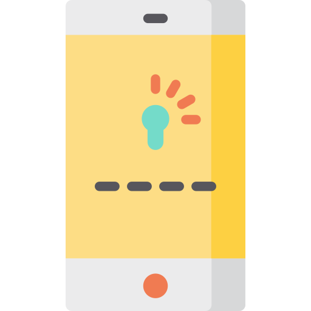

امـنـیـت رایـانـه
برای فعالان مدنی و روزنامهنگاران
{ امنیت تیکتاک }
ایرانسک
IranSecurity
IranSec
IranSec2
این محتوا با و تحت گواهی منتشر میشود (بیشتر بخوانید)
مروری بر مهمترین تنظیمات امنیتی
پاییز ۱۴۰۲ورود به تنظیمات تیکتاک
روی Profile در منوی پایین صفحه کلیک کنید تا به صفحه پروفایل منتقل شوید. در صفحۀ پروفایل تیکتاک، با کلیک بر روی منوی همبرگری (سه خط افقی بالا) منوی امکانات برای شما نمایش داده میشود. با کلیک روی Setting and privacy، وارد تنظیمات تیکتاک میشوید.
تنظیمات حریم خصوصی تیکتاک
با خصوصی کردن حساب کاربری، افراد فقط با کسب اجازه از شما میتوانند صفحه شما را ببینند. برای این کار، در تنطیمات وارد Privacy شده و کلید Private account را روشن کنید. و برای اینکه دیگران نتوانند آنلاین بودن شما را ببینند، کلید Activity status را خاموش کنید.
تنظیم ورود دومرحلهای تیکتاک
در تنظیمات وارد Security شوید و روی Two-step verification کلیک کنید. روشهای دریافت رمز دومرحلهای را انتخاب کنید (حداقل دوتا) و روی TurnOn کلیک کنید.
آدرس ایمیل خود را وارد کنید و دکمه Send code را بزنید. کدی که در ایمیل خود دریافت کردهاید را وارد کنید. حالا رمزی با ویژگیهای تعیین شده بسازید و دکمه Next را بزنید. روی Copy code کلیک کنید و Next را بزنید. سپس به نرمافزار تایید دومرحلهای بروید.
روی علامت + پایین صفحه کلیک کنید و Enter a setup key را انتخاب کنید. نام انتخابی و رمز کپی شده را وارد کنید و دکمه Add را بزنید. سپس کد جلوی حسابتان را بردارید و به تیکتاک برگردید.
کدی که از برنامه برداشتید را اینجا وارد کنید. در این مرحله میتوانید شماره تلفن خود را وارد کنید و یا با دکمه Skip از آن عبور کنید. همچنین نرمافزار از شما سوال میکند که آیا میخواهید دستگاهتان بهعنوان دستگاه مورد اعتماد ثبت شود یا خیر. دستگاه مورد اعتماد، دستگاهی است که نیاز به ورود دومرحله ای ندارد. اگر میخواهید Add و اگر نمیخواهید که ثبت شود، Skip را بزنید.
بررسی دسترسیها به حساب تیکتاک
در تنظیمات وارد Security شوید. در بخش Security alerts، مطمئن شوید که فعالیت غیرطبیعی در حساب شما رخ نداده باشد.
به Security برگردید و وارد Manage devices شوید. در این بخش لیست نشستهای فعال حساب خود را مشاهده میکنید و میتوانید نشستهای غریبه را حذف کنید.
دوباره به Security برگردید و اینبار وارد Two-step verification شوید. در بخش آخر میتوانید لیست دستگاههای مورد اعتماد را مشاهده و یا با زدن علامت سطل زباله حذف کنید. همچنین با خاموش بودن کلید Save login info در Security، اطلاعات ورود (شناسه و رمز)، در دستگاههایی که با آن وارد حساب میشوید ثبت نمیشود.
غیرفعال/پاک کردن حساب کاربری تیکتاک
در تنظیمات وارد Accounts شده و روی Deactivate or delete account کلیک کنید. Deactivate به این معناست که شما مدتی شناسه خود را غیرفعال میکنید و طی این مدت شناسه شما برای همه پنهان میشود تا زمانی که دوباره وارد شناسه خود شوید و فعال شود. Delete account به این معناست که همه اطلاعات شناسه کاربری شما بهطور کامل پاک شوند و قابل بازیابی نباشند.
برای غیرفعال کردن حساب، مورد اول را انتخاب کرده و دکمه Deactivate را بزنید. رمز حساب خود را وارد کنید و دکمه صورتی رنگ را بزنید. برای پایان کار، دکمه Deactivate را بزنید.
برای پاک کردن حساب، مورد دوم را انتخاب کنید و دلیل پاک کردن حساب خود را انتخاب و یا روی Skip کلیک کنید. با زدن تیک پایین صفحه، میپذیرید که حساب شما به مدت ۳۰ روز غیرفعال شود و پس از آن درصورت عدم بازگشت شما، اطلاعات کاملا پاک شوند. دکمه Continue را بزنید.
دکمه Continue را بزنید. رمز حساب خود را وارد کنید و روی دکمه صورتی رنگ کلیک کنید. بهعنوان آخرین مرحله، Delete را بزنید.
نیاز به کمک دارید؟
پرسشهای خود را با ما در میان بگذارید. support@iransec.org t.me/IranSec_Botحق مولف و تشکر
این نوشته به واسطهی تجربهی چند ساله در ارائهی مشاورهی امنیتی به سازمانها و فعالان مدنی و حقوق بشر و روزنامهنگاران تهیه شده است. هر چند که تمام تلاشم را کردهام که متن حاضر بهروز و بینقص باشد، امکان ایراد وجود دارد پس با آغوش باز پذیرای نقدها و پیشنهادات شما هستم. لازم است یادآوری کنم که این جزوهی امنیتی با گواهی کریتو کامنز (قابل استفادهی غیر تجاری، تخصیص و سهم یکسان) منتشر شده است. به حتم برای هر شکل از استفادهی تجاری از این مجموعه نیاز به کسب اجازه دارید.
در این پروژهی آموزشی از محتوای دیگران با گواهی قابل انتشار و تغییر استفاده شده است. از آن جمله میتوان به ارائهگر reveal.js، قلمهای لالهزار و وزیر و بی-یکان، شکلکهای ion و awesome و flat icons استفاده شده. در هر جای پروژه که عکسی استفاده شده منبع آن ذکر شده است. اگر منبعی از قلم افتاده است خوشحال میشوم که آن را گوشزد کنید.